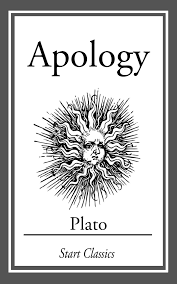
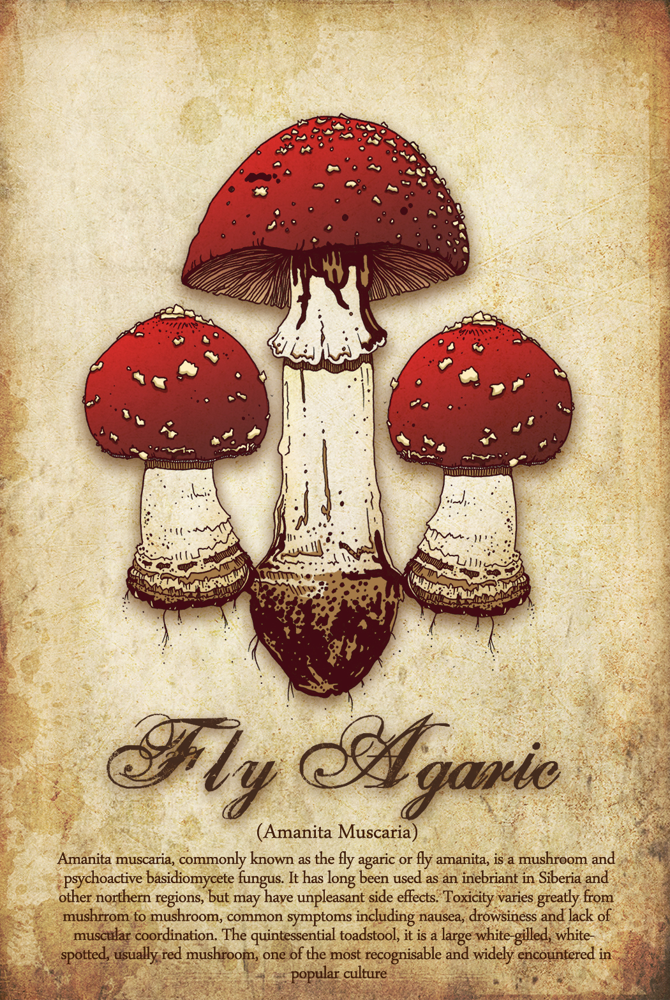
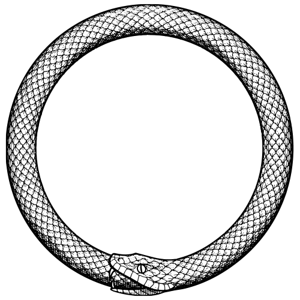

![Josie=]](./Images/Josie.jpg)
I like to learn, maybe the learning process some schools offer not so much but learning and being able to understand and know what was previously unkown is really interesting.
Something that really interest me is science; science as a whole. Chemistry, mycology, psychology are some but not all fields I find interesting. The field that interest me the most is philosophy, the study of thought is (depending on the field:of both philosophy and other things) the basis for everything.
A book I really enjoyed reading was Apology by Plato
Common symbol of Mycology theAmanita Muscarita
Periodic Table, of Chemistry of course

Greek letter Psi. A symbol associated with psychology

The Ourubrous, a symbol commonly associated with Philosophy. A symbol representing the never-ending cycle of life
